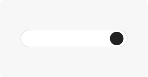

1 · Search
Find a course
- Header search is one field
- Try CS 136 or AMATH 250
- Explore opens the tree for that course
Default = Balanced Path Finder (score-aware). Off = opt-in scores off — no badges, outlines, or dimming. Clear action returns to Off view.
How to read Explore — Path Finder prioritization on your prerequisite tree.

1 · Search
2 · Path Finder
3 · OR baskets
4 · Depth
Prototype · Path Finder prioritization only — Future courses not in this review.
What UWtree is, where ratings come from, and how we use them.
Product
Liked · Easy · Useful
→ Balanced blend
Data
Scope now
Support
Prototype for caller review · not production copy.